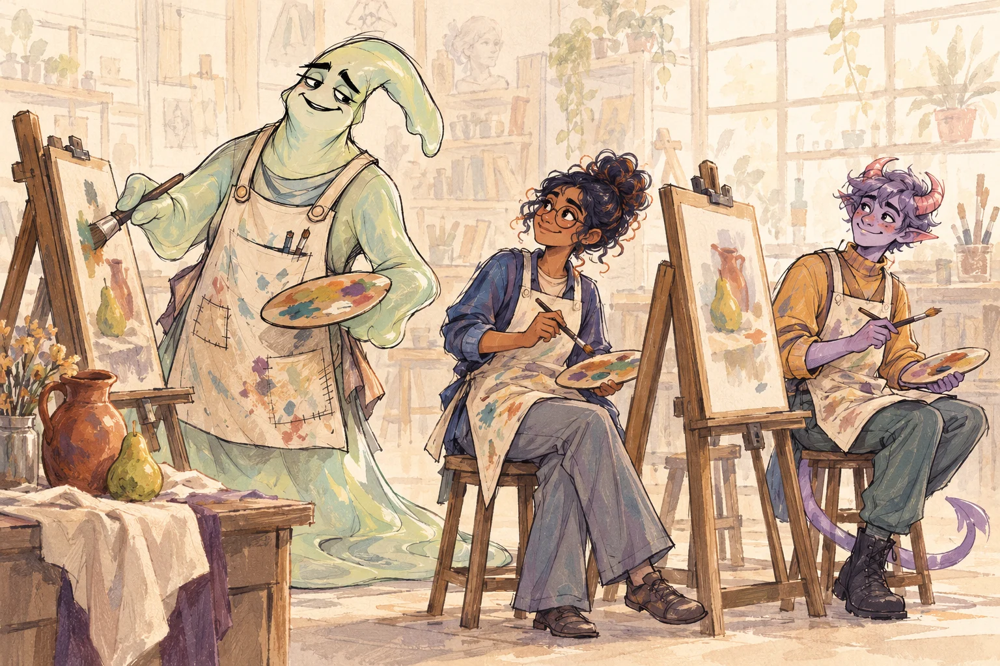
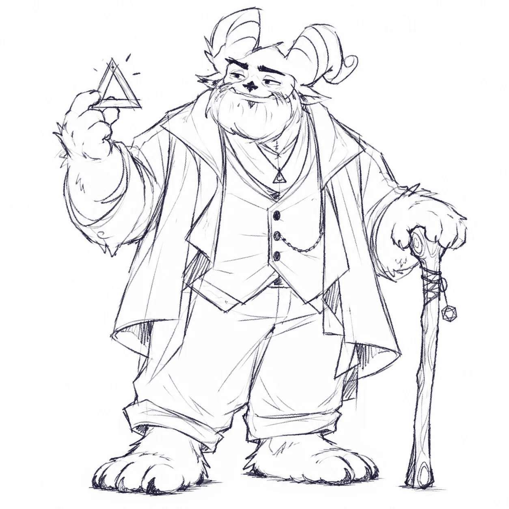
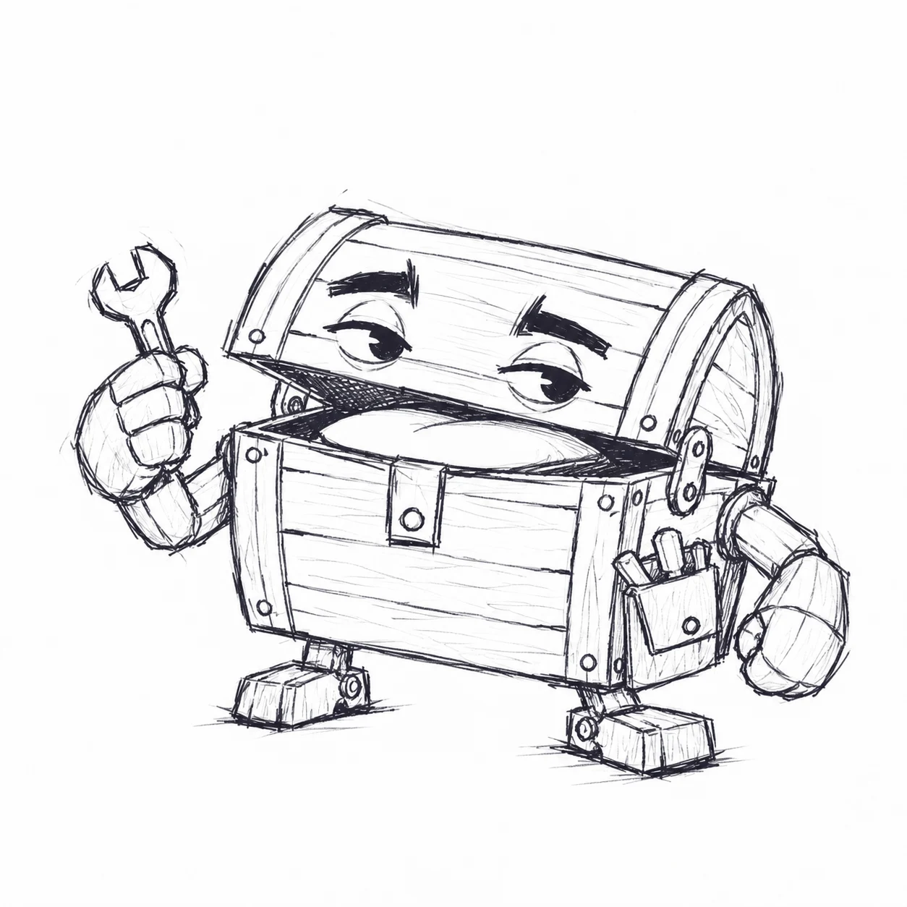
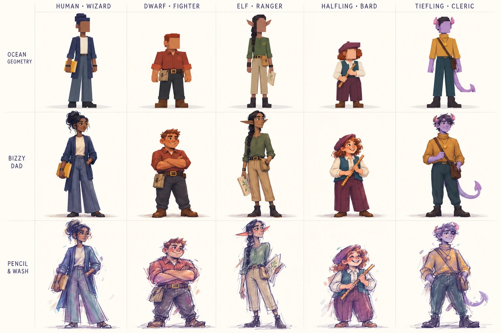
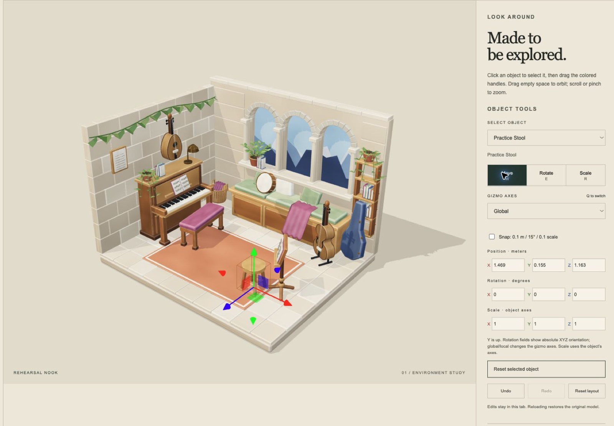

02 / ART STYLE GUIDE
One direction.
Eight disciplines.
The visual language of VRHS, from the shape of a teacher to the way a moment of discovery feels. Working direction · v0.1.

COMMON FOUNDATIONS
Shape, materials
and color
Welcoming fantasy with enough attitude for a teen audience. Shapes lead; detail supports. Warm materials and purposeful light hold the world together.
Working palette
Material-led neutrals, deep ink, moss and a controlled brass accent. These are provisional presentation colors to test in the game.
Before approval
Check silhouette, value hierarchy, material clarity, age fit and small-screen readability together.
DIRECTION ACROSS THE CAST
A shared language.
Different personalities.
Compare silhouette, costume and gesture across very different bodies before expanding production.



Characters
Give each teacher a distinct silhouette and subject prop.
Design the ensemble before polishing one individual. Every teacher gets a distinctive silhouette, gesture and useful subject prop.
- DIRECTION
- Broad value groups; deliberate proportions; practical academic costume; expressive brows and hands.
- REVIEW QUESTION
- Can the teacher and their subject be recognized at thumbnail size?
- NEXT PROOF
- Goblin model and ensemble silhouette comparison.
Environments
Arrange the classroom around the activity.
Warmth, depth and clear focal points give the school a lived-in identity. Department differences grow from a shared material vocabulary.
- DIRECTION
- Stage around the teaching surface; organize light and value; use repeated architectural motifs and restrained dressing.
- REVIEW QUESTION
- Does the activity remain obvious without interface labels?
- INTERACTIVE STUDY
- Open the rehearsal-nook model preview ↗

INTERACTIVE 3D STUDY
Explore the rehearsal nook
Orbit the corner and arrange individual objects with move, rotate, and scale tools.
CAMPUS / EXTERIOR STUDIES
A school
in the Alps.
Three architectural directions from the existing Alpine monastery studies. Different silhouettes, mountain settings, and palettes.


Selected from the existing six-study monastery exploration. Open a study to see it at full size.
Animation
A coin reveal, a change of expression and a celebratory pose.
Test character appeal early.
A short motion test shows how expression, pose and timing bring a character to life. Review it early to see whether the performance is appealing and fits the character’s role.
These tests give the team and stakeholders something concrete to respond to. They help build buy-in and establish an art direction for movement, expression and effects before production expands. Sharing selected tests can also build hype by giving an audience a first look at the cast in motion.
Plan performances, effects and shots.
Video generation tools make it easier to explore character animation, VFX and cinematic concepts early. Compare gestures, effect timing, camera angles and shot pacing, then use the selected studies as references for animation briefs, storyboards and production planning.
For classroom performances, idle, listen and teach remain different intentions. Movement should communicate attention and give the student room to respond.
- DIRECTION
- Readable poses; small purposeful gestures; clear anticipation and settle; stillness where it matters.
- REVIEW QUESTION
- Does the movement make the character appealing, communicate intention and fit the school’s tone?
- NEXT PROOF
- Translate the selected poses and timing into a rigged performance, then review it in the classroom scene.
UI & Emotes
Make the next action clear.
A confident, legible interface carries the same personality as the characters while keeping the next action easy to find.
- DIRECTION
- Clear type hierarchy; stable interaction states; symbols alongside color; expressive but restrained emotes.
- REVIEW QUESTION
- Is the next action legible at a small screen size and without relying only on color?
- NEXT PROOF
- Music prompts, selection states, captions and completion feedback.
Cards & Illustrated Content
Portraits, illustrated learning prompts and activity summaries should belong to the same world as the 3D assets.
- DIRECTION
- Repeat the same character proportions, palette and framing; keep visual priority intact at small sizes.
- REVIEW QUESTION
- Does a cropped portrait retain identity beside the real-time character?
- NEXT PROOF
- Faculty portrait and illustrated activity brief. Formats are proposed, not a card-game mechanic.
Rewards & Reveals
Celebrate a student’s work with a considered reveal and a visible result they can recognize as their own.
- DIRECTION
- Build anticipation, reveal clearly, then settle; avoid obscuring the work with decorative effects.
- REVIEW QUESTION
- Does the player understand what they accomplished and what changed?
- NEXT PROOF
- Music-class completion and student showcase target. No randomized reward system is implied.
VFX
Use effects to show selection, change and completion.
Effects make touch, attention, change and success visible. A shared shape and timing vocabulary holds them together.
- DIRECTION
- Reserve brightness and motion for meaning; pair effects with persistent state changes; protect silhouettes.
- REVIEW QUESTION
- Can the effect’s purpose be understood, and does it preserve the teaching focal point?
- NEXT PROOF
- Instrument selection, beat pulse and one restrained success effect.
Brand & Key Art
Title, emblem, hero image and promotional material express the same tone and visual rules as the playable.
- DIRECTION
- Use the actual designed cast and world; compose for a clear subject; preserve the direction across crops.
- REVIEW QUESTION
- Would the pitch image and the game screenshot feel like the same product?
- NEXT PROOF
- Website hero treatment and a finished in-engine promotional composition.
THE PRODUCTION STANDARD
Asset review criteria
The guide sets the intention; drawings, AI exploration, modeling and implementation are ways to reach it. Compare outputs against the rule, correct the mismatch, and check the result in context.
The structure adapts the NFL Clash guide’s character, environment, animation, UI/emote, card, reward and VFX pillars, with brand and key art as a separate eighth discipline. Rules here are working proposals, not a claim of completed production.